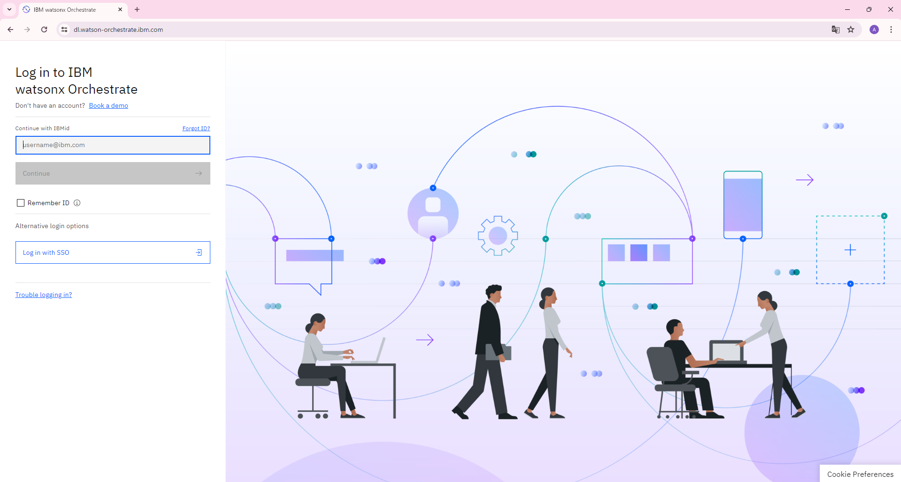
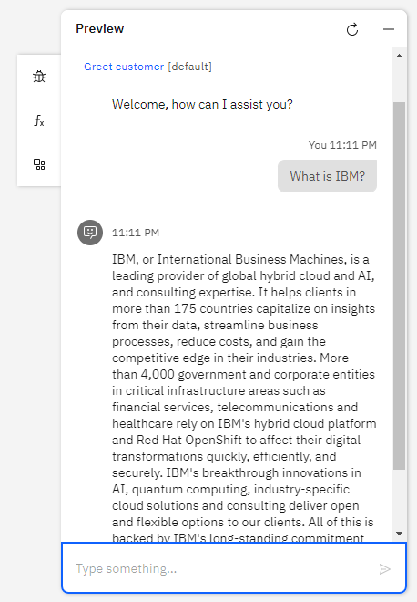
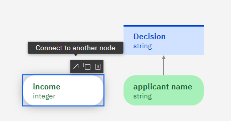
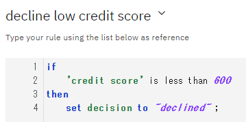
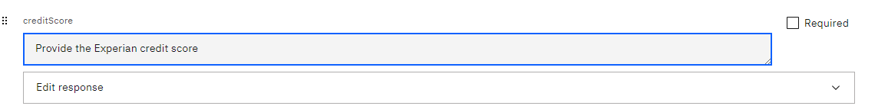
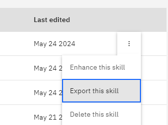
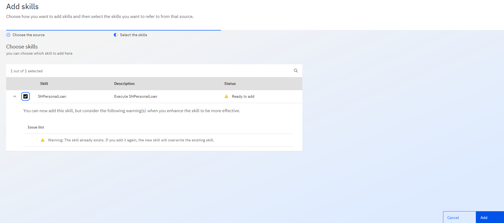

AIAssistant Builder
このLabでは、AI Assistant Builderを用いて、AI Assistantを構築します。生成AIを用いて回答するアクションや、これまでのハンズオンで作成したスキルを呼び出すアクションを定義し、動作を確認します。
前提条件
- watsonx Orchestrateの環境にアクセスできること。
https://dl.watson-orchestrate.ibm.com/ - IBM-idを用いてログイン可能であること。
- AI Assistant Builderを用いて自動化を作成する権限があること。(Builder権限)
watsonx Orchestrateへのアクセス
- watsonx Orchestrateにログインします。
- IBM-idを入力して、Continue ボタンをクリックします。
- 複数テナントに所属する場合には、テナント選択画面が表示されるので、適切なテナント名を選択してください。

AI Assistantの作成
-
AI Assistant Builderをクリックします。もしくは、左上のメニューからAI Assistant Builderを選択してもOKです。
-
画面上部右にAssistantのリストがあります。そこを展開し、Create New ＋をクリックします。
-
Assistantの作成ダイアログが表示されるので、あなたのイニシャル-Assistantという名前を入力し、Create assistantをクリックしてください。Assistant Languageとして日本語を選択することも可能ですが、現時点で一部の機能が使用できないためEnglishのままにしてください。

-
Assistantが作成されます。画面下部に全体のアーキテクチャが表示されています。このハンズオンでは、General purpose、AI-guided、Skill-basedの3つの動作を確認します。
LLMによる基本動作の確認
AI AssistantではLLMを用いて回答を生成することが可能です。また、LLMによる回答を望まない場合には、LLMによる一般的な回答を行わないように設定することが可能です。Elastic Searchとの統合を構成することで、検索結果をもとに生成AIで回答を生成するいわゆるRAG(Retrieval Augumented Generation)のパターンを構成することも可能ですが、今回のハンズオンでは行いません。
-
左側のリストより、Generative AI を選択してください。

-
以下のような画面が表示されます。この画面からは生成AIに関する設定を行うことが可能です。上部選択リストを展開し、利用可能なLLMを確認してください。今回はデフォルトで設定されている、graniteをそのまま使用します。
-
右下に表示されているプレビューの入力欄にWhat is IBM?と入力して送信してください。LLMによって一般的な質問に対しての回答が生成されます。
 -
LLMが一般的な回答を行うかどうかは、Answer behaviorのGeneral purpose answeringで設定することが可能です。右側にあるトグルスイッチをクリックし、OFFにしてください。

-
再びプレビューの入力欄にWhat is IBM?と入力してください。先ほどとは回答が異なることを確認します。

Input ノードの実装
Inputノードの定義をしていきます。
-
Inputノードをクリックし、左側に表示される編集欄から、Node nameをapplicant nameに変更してください。

-
パレットからAdd Input Nodeをクリックし、新規にInputノードを追加します。
-
追加されたノードをクリックし、右側の編集欄から、Node nameをincomeに、Output typeをIntegerにしてください。
-
incomeノード上にマウス・カーソルを動かすと、アイコンが表示されるので、Connect to another nodeをクリックし、decision nodeに接続してください。(もしくは、DecisionノードのメニューからAdd Inputを選択した場合には自動的に接続されます)
 -
1-4の手順を繰り返し、以下の表に従って新規ノードを追加してください。
| Node name | Node type |
|---|---|
| employed | boolean |
| SSN | string |
| loan purpose | string |
| credit score | integer |
- 意思決定ダイアグラムは以下の様になるはずです。

ルールの作成
次に、意思決定ノードの中で実行されるルールをいくつか作成します。ルールは構文形式と意思決定表の形式で記述することが可能です。(日本語を用いることも可能ですが、現在のバージョンではサポートされていないため英語での記述になります。)
-
初めに作成するのは、デフォルト・ルールです。デフォルト・ルールは、承認の意思決定の結果を初期化するために用います。その他のルールにはローンを却下する場合の条件を指定します。デフォルトのルールを作成するには、意思決定ノードを選択し、Loanタブをクリックしてから+ボタンをクリックし、Default ruleを選択します。

-
次のような意思決定エディタが表示されるので、string placeholder(\<a string>と表示されている場所)をクリックしてドロップダウンからstringを選択し、approvedと入力してください。
-
ルールは以下の様になっているはずです。

-
次に、クレジット・スコアが600以下の申請者の申請はすべて却下するルールを追加します。+ をクリックして、Business Ruleを選択します。ルールの名前をdecline low credit scoreとして、criteria chocesでcredit scoreを選択してからcreateをクリックしてください。
-
ルールのテンプレートを以下の様に修正します。
 -
(オプション)例えば、無職の場合(employed is false)にローンを却下するなど、入力された値によってローンが却下されるようないくつかのルールを追加してみてください。(デフォルトで、ローンの申請は承認され、ルールは却下する理由を判定することに注意してください。)
意思決定のテスト
作成した意思決定はテスト・データを指定してテストすることができます。
-
右上のPreviewアイコンをクリックしてください。
-
Add test data setをクリックしてテスト・データを追加します。
-
左側に各項目の入力画面が表示されるので、＋をクリックして入力してからpewviewボタンをクリックして意思決定の出力を確認してください。例えば、creditScoreに500を入力して実行した場合、却下されるはずです。
意思決定サービスのデプロイ
正しく動作することが確認できたら、スキルとして呼び出せるようにサービスをデプロイします。
-
Back to "XX Personal Loan"をクリックしてください。
-
Operationsタブをクリックしてください。スキルとして呼び出されるオペレーションを定義します。

-
Create operationボタンをクリックしてください。

-
オペレーションの設定画面が表示されるので、Operation nameをXX Personal Loan、source modelとして XX Personal Loanを選択してからsaveをクリックしてください。この操作によってスキルとして呼び出されるオペレーションが作成されます。
-
次にページ右上にあるShare changesタブをクリックします。
-
Shareボタンをクリックしてください。ダイアログが表示されるのでShareをクリックします。この操作により、リポジトリに変更が反映されます。
-
左上の←をクリックしてLending Serviceのレベルに戻り、Historyタブをクリックしてください。

-
右側の+アイコンをクリックし、バージョンを作成します。
-
バージョンの名前としてnameの欄に1.0.0と入力し、Createをクリックしてください。
-
バージョンが作成されたら、Publishタブをクリックし、作成されたバージョンを展開し、Publishをクリックしてください。ダイアログが表示されるのでPublishをクリックします。
-
意思決定サービスがパブリッシュされ、実行可能になりました。このサービスに紐づいたスキルがOrchestrate上に作成されます。左上のメニューからSkills and appsを選択してから、Skillsタブをクリックし、スキルの一覧を表示させます。
-
作成した意思決定のスキルがReady to Publishの状態で表示されているはずです。

スキルのエンハンス
スキルのエンハンスを行い、各入力パラメータの表示形式や振る舞いを変更してみます。以下の様に変更します。変更はスキルのエンハンス画面から実施することが可能です、また、スキルが定義されているOpenAPI定義を直接変更することでより細かい変更が可能です。
| 入力パラメータ | 振る舞い |
|---|---|
| income | 必須 |
| loan purpose | 選択肢 |
| credit score | 説明を追加 |
| SSN | 非表示 |
| employed | default value:true |
-
スキルの右側のメニューを展開し、Enhance this skillを選択します。
-
Inputタブをクリックし、incomeのRequiredにチェックを入れてください。
-
loanPurposeのOptionsを選択し、medical emergency,consolidate debt,home improvementの3つのOptionを設定してください。
-
creditScoreを選択し説明にProvide the Experian credit scoreを入力してください。
 -
Save as draftをクリックして変更を保存します。

-
スキル一覧画面に戻り、Export this skillを選択し、スキルをエクスポートし、ローカルにjsonファイルを保存します。
 -
メモ帳やエディタなどで保存したファイルを開きます。各項目はx-ibmプロパティによって設定されます。x-ibmプロパティの詳細についてはUnderstanding x-propertiesを参照してください。
-
epmployedは以下の様に設定されています。,"default": "true"となるようにファイルを編集してください。（カンマを含めることを忘れないでください）
"employed": {
"type": "boolean",
"x-ibm-order": 3,
"x-ibm-multiline": "false",
"default": "true"
},
-
同様にSSNの部分を修正し、以下の様に ,"x-ibm-show": "false"を追加してください。
"SSN": { "type": "string", "x-ibm-order": 4, "x-ibm-multiline": "false", "x-ibm-show": "false" }, -
ファイルを保存します。
-
Skills and appsの画面でAdd skillsをクリックします。

-
From a fileをクリックし、先ほど保存したファイルをドラッグ＆ドロップするか、クリックして選択してください。
-
ファイルの検証が正しく行われたことを確認しNextをクリックします。エラーが表示された場合には、正しく編集されていることを確認してください。

-
既に存在するスキルをインポートするため、警告が表示されますが、スキルのチェックボックスにチェックをいれ、Addをクリックしてスキルを上書きします。
 -
スキルの右側のメニューからEnhance this skillをクリックしてからスキルをPublishしてください。

-
左側のメニューからSkill catalogを選択します。
-
あなたのイニシャル_Lending_Service検索欄に記入して検索し選択し、Addをクリックしてスキルを追加します。
-
左側のメニューからChatを表示し、チャットの入力欄に、あなたのイニシャルPersonalLoanと入力してみてください。 スキルのフォームが表示され、先ほど行ったカスタマイズが正しく行われていることを確認します。
-
値を入力し、正しい結果が返ってくることを確認してください。
お疲れさまでした！
このハンズオンでは、Automation Builderを用いて意思決定サービスを実装し、スキルの入力フォームをカスタマイズしてから、チャット画面から呼び出しました。意思決定サービスを用いることで、AIが苦手な根拠のある正確な判断を実行することができます。